星々の箱庭
⭐1.開き方
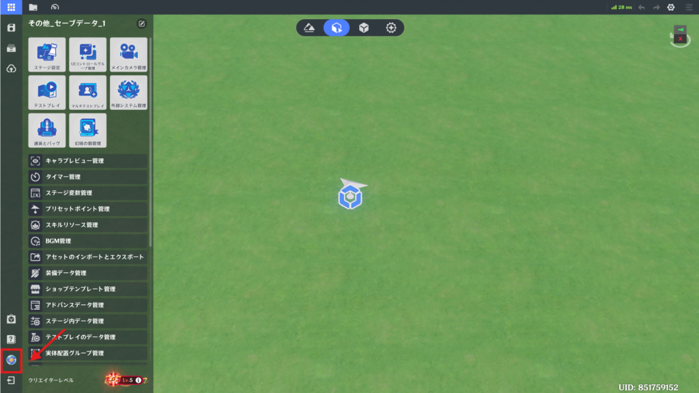
プロジェクトを開いた時に自動的に起動します。
それ以外の方法では、左上のシステムメニューを開き、左下のアイコンをクリックすることで起動します。
⭐2.画面構成
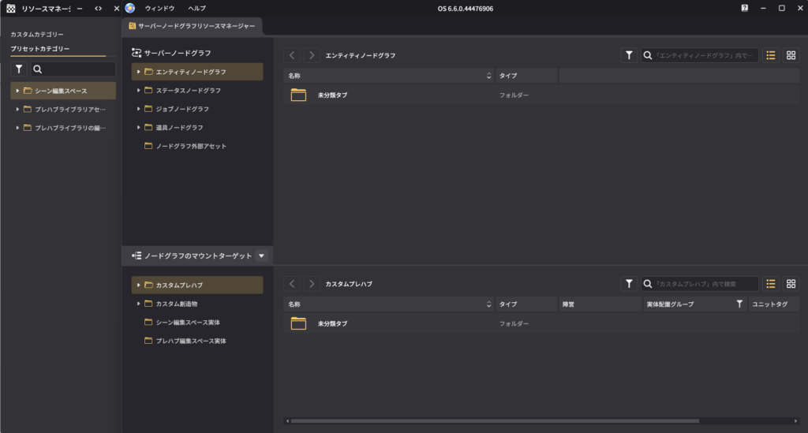
左側のウィンドウは、「リソースマネージャー」です。
右側のウィンドウは、「サーバーノードグラフリソースマネージャー」です。
タブが複数ある場合は、ドラッグして並べ替えたり、タブを外に引き出して別ウィンドウにすることもできます。
⭐3.リソースマネージャー
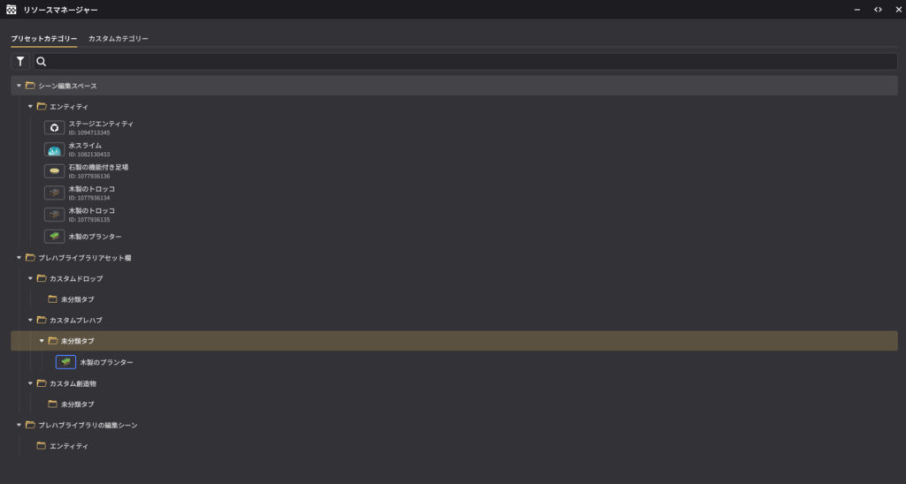
現在のプロジェクト内に存在するオブジェクトやプレハブなどのリソースを表示します。
⭐4.サーバーノードグラフリソースマネージャー
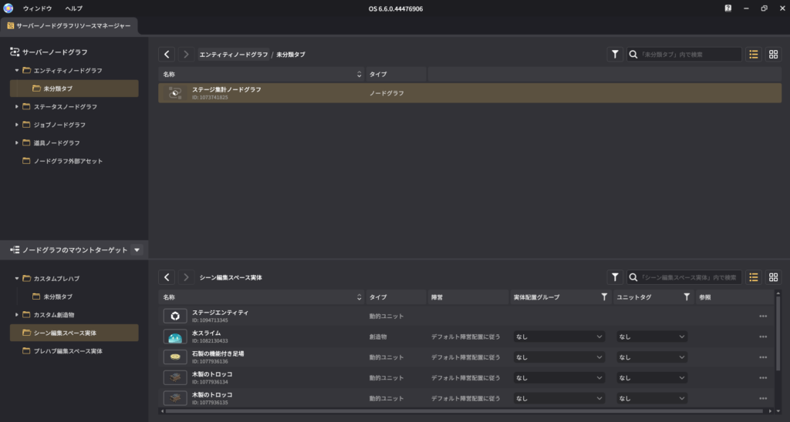
星々の箱庭を起動すると、デフォルトでサーバーノードグラフリソースマネージャーが開きます。
上部には、現在作成されているすべてのサーバーノードグラフが表示されます。
下部には、サーバーノードグラフを紐づけ可能なオブジェクトが表示されます。
エンティティ、ステータス、ジョブ、道具の各ノードグラフの作成および管理をここで行います。
外部のノードグラフアセットから、サーバーノードグラフをインポートすることができます。
⭐5.クライアントノードグラフリソースマネージャー

左上のウィンドウから開くことができます。
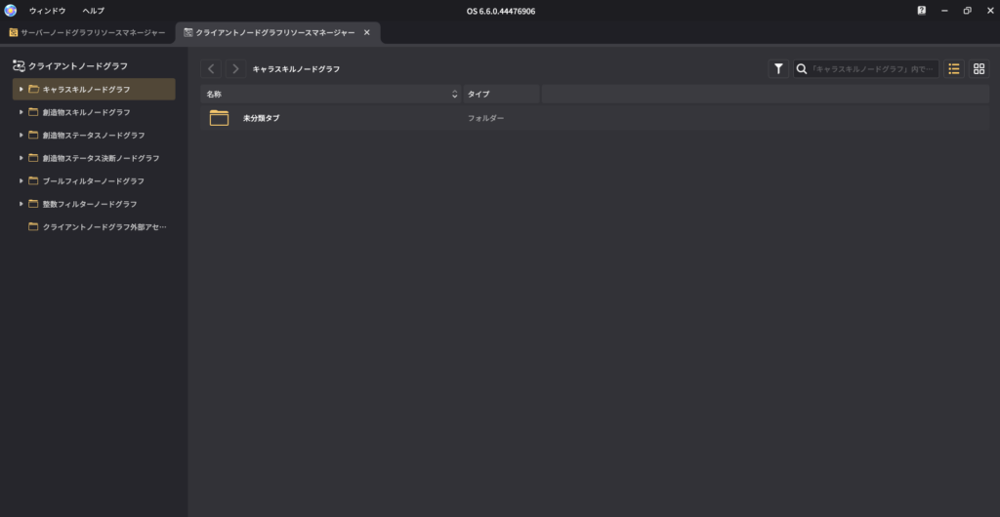
キャラクタースキル、創造物スキル、創造物ステータス、創造物ステータス決断、ブールフィルター、整数フィルターの作成と管理をここで行います。
外部のノードグラフアセットから、クライアントノードグラフをインポートすることができます。
⭐6.ノードマネージャー

左上のウィンドウから開くことができます。
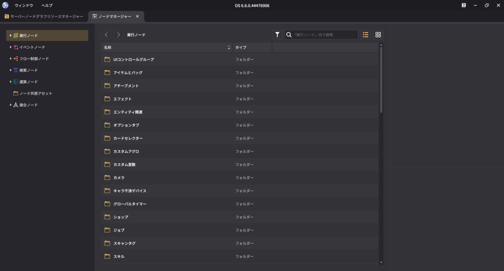
すべてのノードカテゴリー、ノード詳細を表示します。
複合ノードの作成と管理を行うことができます。
外部のノードグラフアセットから、複合ノードのインポートを行うことができます。
⭐7.日誌

左上のウィンドウから開くことができます。
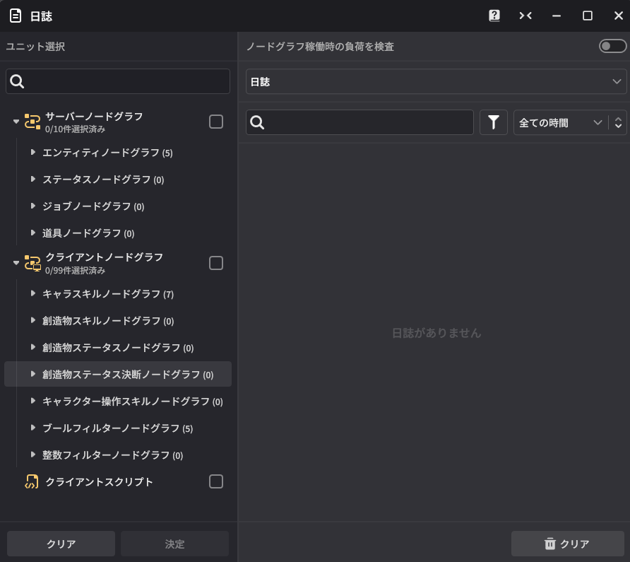
ログ機能です。
ログを取りたいノードグラフを選択することで、テストプレイ時の情報をリアルタイムで記録することができます。
⭐8.サーバー信号マネージャー
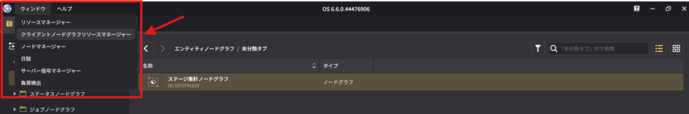
左上のウィンドウから開くことができます。
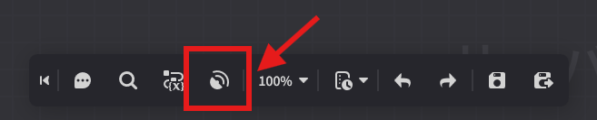
左上のウィンドウから開くことができます。
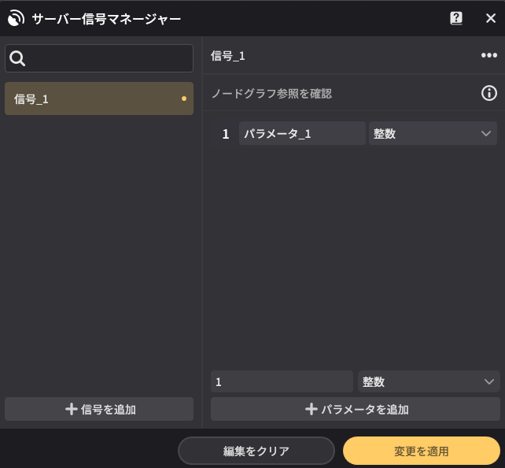
信号のパラメータを設定することができます。
設定した内容は、信号発信時に受け取り手にパラメータとして送ることができます。
⭐9.負荷検出

左上のウィンドウから開くことができます。
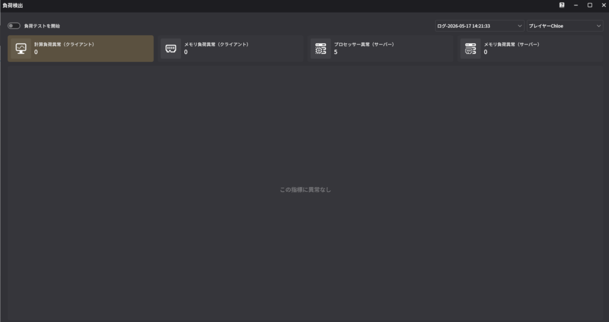
テストプレイ時におけるノードグラフの負荷データを検出し、記録します。